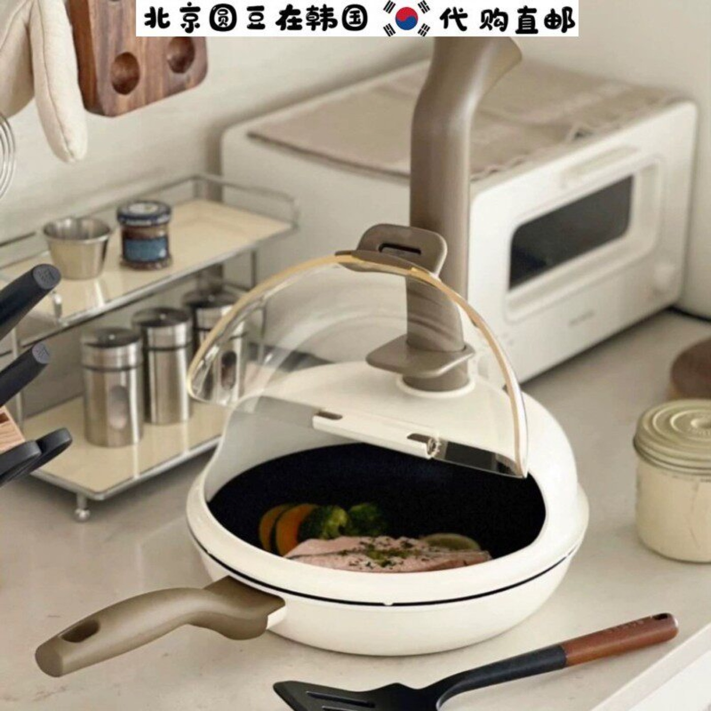

Teardown 07
带导流管的防滴漏创意锅盖

用户
经常在家煲汤炖煮的家庭做饭人群；讨厌掀开锅盖时冷凝水滴落弄脏灶台、溅进菜里
场景
厨房炖煮、煲汤过程中，掀开锅盖查看或搅拌食材
当前方案痛点
掀开锅盖时，内壁冷凝水会滴落，弄脏灶台难清理；滴进热菜里容易溅油烫伤；滴进汤里会冲淡味道
创意方案
锅盖边缘增设竖向导流管，锅盖内侧的冷凝水沿内壁汇集后，顺着导流管向外导出；配有塞子，不需要时可堵住恢复普通锅盖功能
核心价值
从源头疏导冷凝水，解决开盖滴水的高频小麻烦，减少事后清洁工作量，提升做饭安全性
方案短板与边界
导流管突出，收纳占用更多空间；只针对竖向滴落的冷凝水，倾斜锅盖时依然会滴水；管口容易积垢，需要额外清洁
底层设计思想
针对产品使用过程中附带产生的副作用问题，在原有部件上增加简易疏导结构，从源头处理多余物，而非让用户事后补救清理
同思想延伸案例
- 带集水盘的洗菜盆：疏导废水，避免溅水弄脏台面
- 带导水槽的长柄雨伞：雨水沿伞骨导到伞尖定点滴落，不会顺着伞边到处滴
- 带沥水口的密封饭盒：可直接倾倒汤水，不用开盖沥水
AI 机会迁移
针对系统运行过程中产生的冗余数据/中间产物，内置自动清理导出机制，无需用户手动清理中间文件，降低维护成本